Arkady Kukin
Now
- 2026 —
- Visiting Lecturer, HSE University
- 2026
- Y.Art Residency, Yandex: mentor (arcade machines, circuit basics)
- Telegram
- t.me/BlackComputing
- www.linkedin.com/in/arkady-kukin
Welcome to my portfolio!
I am a game designer and interactive artist. I work with all kinds of games, from dance rituals to therapeutic video games.
I bring to art the experience of mindful and tactile interaction and playful pretending
Website Ecosystem
This page is alive. A small simulation runs behind the frames: glowing blobs crawl looking for fruit, and long-legged spiders hunt the blobs.
You are part of the ecosystem too:
- Drag
- Grab a blob, a spider or a fruit and carry it anywhere. Be gentle with a blob they tear easily.
- Poke
- A click startles a blob and chases a spider away.
- Feed
- Pick a ripe fruit and drop it near a blob. A blob that eats twice gives birth.
Bio
Arkady Kukin (b. 2003, Moscow) is a game designer and interactive artist. He makes games and interactive installations using Arduino, TouchDesigner, camera tracking and LiDAR. His work has been shown at MMOMA, the Ekaterina Cultural Foundation, Yandex.Museum and Redhills Gallery. He is studying for an MA in ArtTECH at NUST MISIS.
Education
- 2025–2027
- MA, ArtTECH, NUST MISIS
- 2022–2025
- BA, Game Design and Virtual Reality, HSE Art and Design School
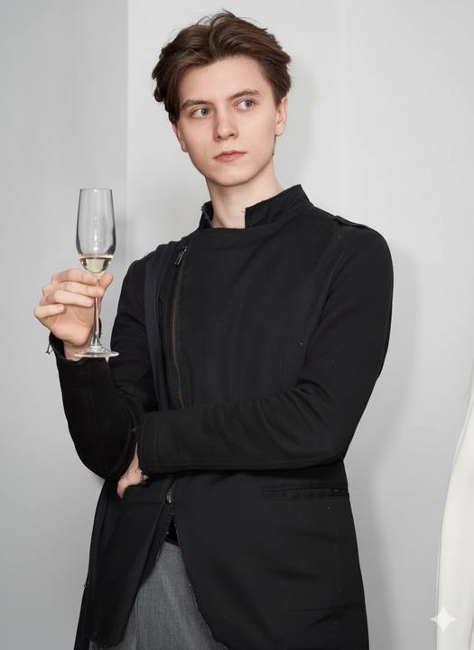
Exhibitions
- 2026
- GES-2, ProspektTsFYV
- Omelchenko GalleryRESPAWN PROTOCOL
- Shtubnits and St. Petersburg Media ArtDigital Rain
- House of Scientists, PushchinoIKAK? Games as Science
- Guide for Complete Dying
- HSE ART AND DESIGNGame Future
- MMOMANII Filaretova. Lucid Dream.
- CCI "Fabrika"Preventing Trees from Standing Still
Publications
Interaction between Generative art and videogames (In russian)
Installations
Breath
Videogames and Digital Works
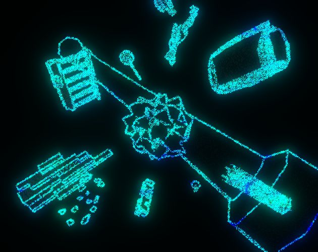
The OrdinateBreath-controlled game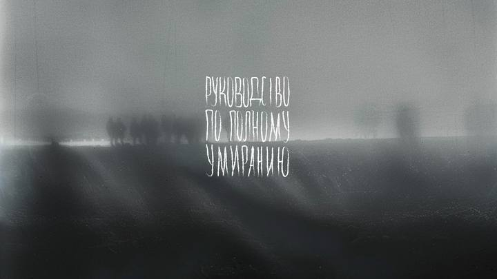
Guide for Complete DyingWeb-exhibitionDirBonSaiDataARTRazvidetPerception game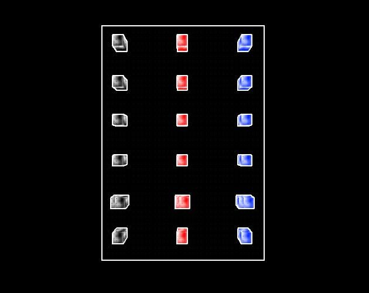
Me and My CubesFirst-person puzzle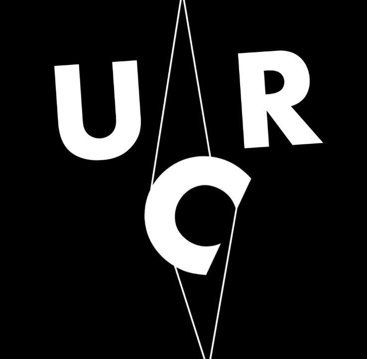
Untitled Robot ControllerRaspberry Pi / VideogameUPADENOKZen game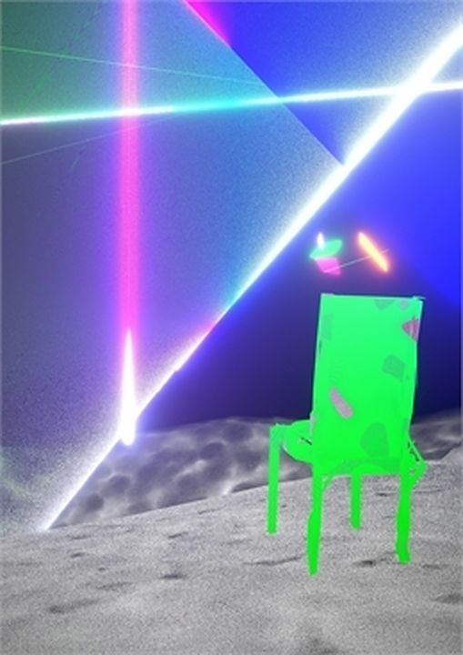
NOMADMetaverse project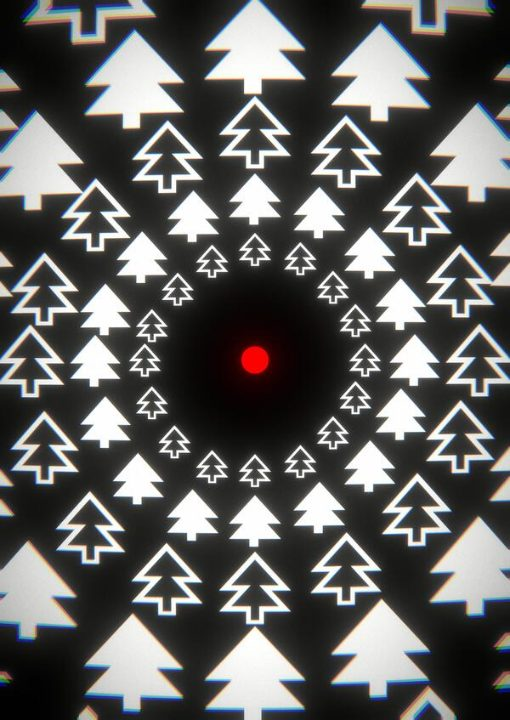
PongUEcological PongHomegeonGame · Mini Jam 136SpaceJunkerAction · Unreal EngineJarnvidSurvival horror · in developmentULTRASPEEEDFirst-person platformerGRAVMinimalist platformer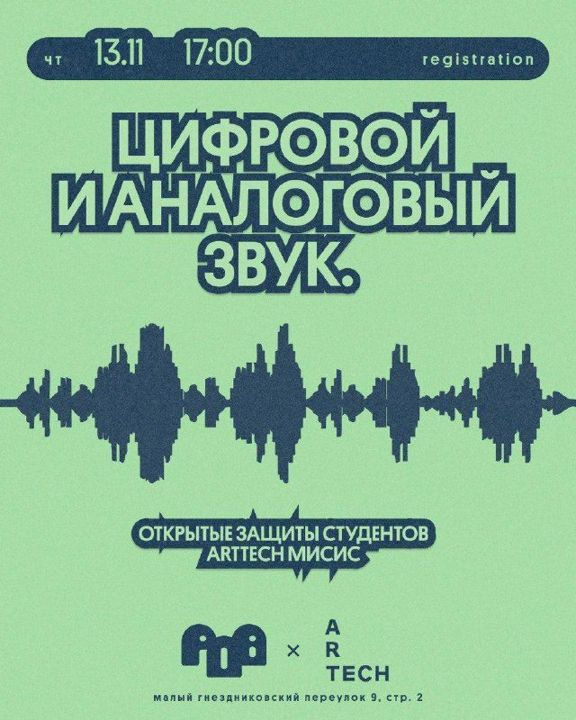
Dance of EternityRave gameGame Design
Experience
- Sep 2026 — present
- Visiting Lecturer HSE University
- World Building elective: how story, space and mechanics support each other
- Apr 2024 — Oct 2026
- Game Designer Mandragora StudioI Am Future (survival farming sim), Restory (repair simulator)
- Owned core gameplay systems from prototype to release, with living documentation
- Designed encounters and levels; ran internal and external playtest cycles and iterated on the results
- Tuned progression and session pacing based on playtest data and community feedback
- Used AI constantly to prototype systems and run playtests — ideas tested in days, not weeks
- Managed tasks and sprints for the design team
- Jun 2025 — Sep 2025
- Game Designer (contract, NDA)
- Designed mechanics and systems for online Unity prototypes of installations at a large international event
- Wrote design docs and timings for real crowds in a physical space
- Jan 2023 — Dec 2023
- Game Designer RabbiotBartender Ender (UE5 action shooter with real-time cocktail mixing)
- Designed and tuned hybrid mechanics in Unreal Engine 5: combat plus a real-time crafting layer
- Wrote and maintained design documentation for a cross-disciplinary team
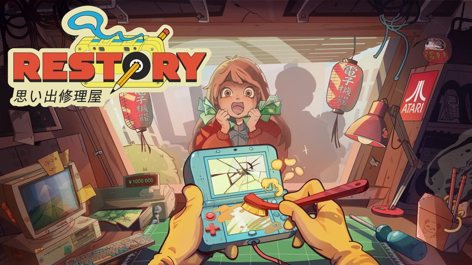
RestorySteam ↗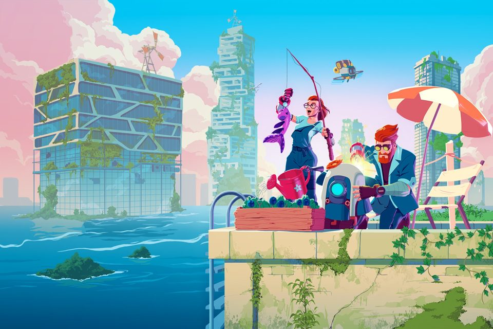
I Am FutureSteam ↗Objects
Practice
Contacts
Get in touch
Got something unusual and interactive in mind? Get in touch!
- Telegram
- t.me/BlackComputing
- www.linkedin.com/in/arkady-kukin
Artist Statement
The aesthetics of games is invisible — it hides in systems, sensations and interactions.
Like a mirage, it wraps around the action and gives special meaning to everything that happens. I am fascinated by how rules give rise to a particular experience, both inside a person and outside of them.
Play frees us from responsibility and gives us the freedom to explore and experiment. It awakens the innocence we lose with age.
In role-play we become sincere: behind someone else’s mask we feel our own true face.
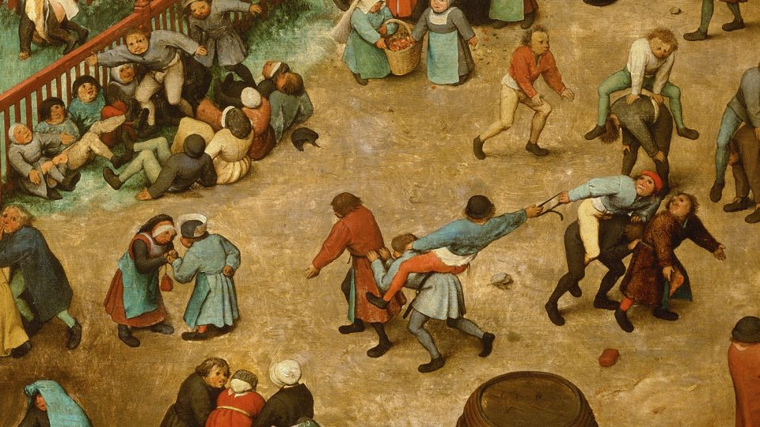
Kid's PlayPieter Bruegel the ElderI work with alt-ctrl video games, interactive installations and live-action games. Wherever the experience of a person interacting can be singled out, I can take it apart and turn it into a game statement.
Pressing buttons, holding hands and breathing into a microphone are, on their own, one-off sensations. A game makes sense of them in the context of its goal, turning a method of input into a new tool, a new limb.
A game makes sense of them in the context of its goal, turning a method of input into a new tool, a new limb.
Arduino and light
Redhills Gallery — Tomorrow and the Day After Tomorrow
The God of the forgotten RI
Game installation with LED lights, photoresistors and Arduino
Lightart
I was engaged in microcontroller programming and creating a behavior tree system for recognizing player symbols and displaying a literary work.
Books
The installation uses a players mind to connect two books: "400 Questions and Answers on Faith, the Church, and Christian Life" and "Haiku: Japanese Three-Line Verses." The machine asks a question, the person assembles an answer from keywords, and then receives a haiku corresponding to their set of keywords.
Touchdesigner
Redhills Gallery — Tomorrow and the Day After Tomorrow
Cuisine Collective
Reconcile the ladles
Game installation on Touchdesigner
A Household Tale
Calm and reconcile the relationships between a ladle, a spoon, and a whisk. Move them around the table, bring them together or separate them. The game will help you unravel the complexities and guide you.
System
A camera tracks the positions of the cutlery by color. Depending on the distance between them, their relationships and moods are calculated: Good relationships improve moods when they are brought closer. Poor relationships worsen moods when they are brought closer. When the cutlery are in a good mood, their relationship improves.
Dota 2 · tablets
For Respawn Protocol exhibition
Mid communication
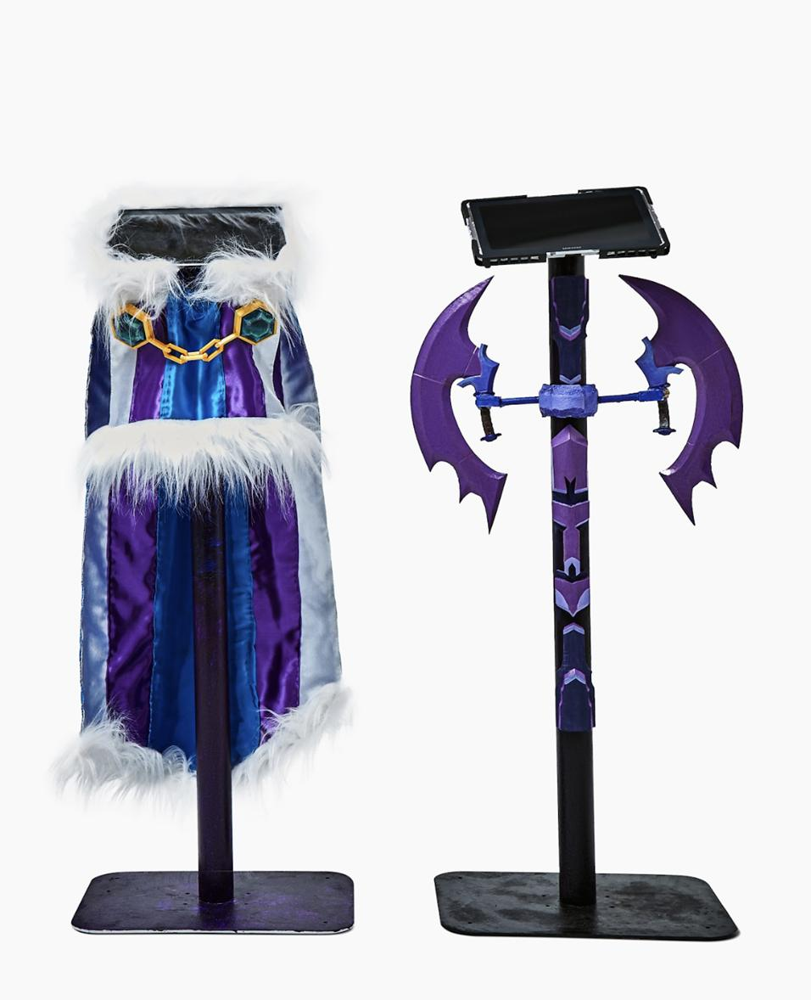
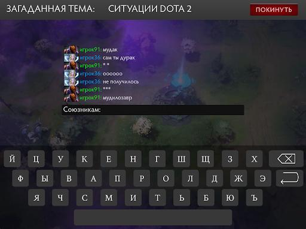
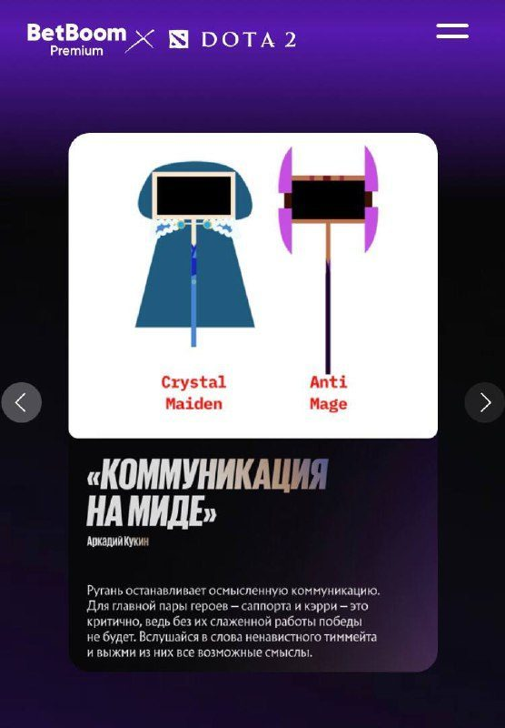
Interactive installation for Betboom Premium The International
Structure
Project consists of two stands with tablets, each installed with a game. Each stand is designed in the style of characters from Dota 2 and corresponds to a specific in-game role.
Game
The game is a chat: first player must explain a word to the second using only profanity. The second participant, however, can only use ordinary vocabulary. This difference in lexicon encourages the search for new meanings and ways of verbalization.
Camera and shadows
MMOMA, 2024
NII Filaretova. Lucid Dream.
Total Collaboration in MMOMA
Magical control
Slowly move your hands in front of the camera to control the figures on the screen.
Collectivity
There is no limit to the number of players. Gather together and combine the figures. Nod, and the result will be photographed.
Performance
Shadows play around you, they will react to the movements of the figures and interact with you.
Unity, Python and LM Studio
Neurocave
6 AI agents look at the shadow of an object and try to guess it. You kill them off until you reach the truth.
Plato's cave
We rely on neural networks as sources of truth, but they cannot see the truth — they only have access to its “shadow”. In the installation, an object is hidden from you. But 6 AI characters see its shadow and describe it. Your task is to figure out what is hidden.
Algorithm
The game is divided into rounds, and at the start of each round the characters send you their reasoning.
You choose the one you trust least and “kill” them, so they stop thinking and the others don't try to think like them.
And so on until only one is left.
Grasshopper and robotic arm
Perfect Accuracy
Are you ready to trust your body to technology?
Concept
Are you ready to trust your body to technology? If so, you can test your resolve in the classic game of mumblety-peg. With a robotic arm.
We created a finger-avoidance algorithm in Grasshopper and attached a knife to the robotic arm. For “safety” reasons, we had to use a wooden stand-in for Timofey during filming.
Lecture
Yandex.Museum — Game in Technology, December 2024
Lecture at Yandex Museum
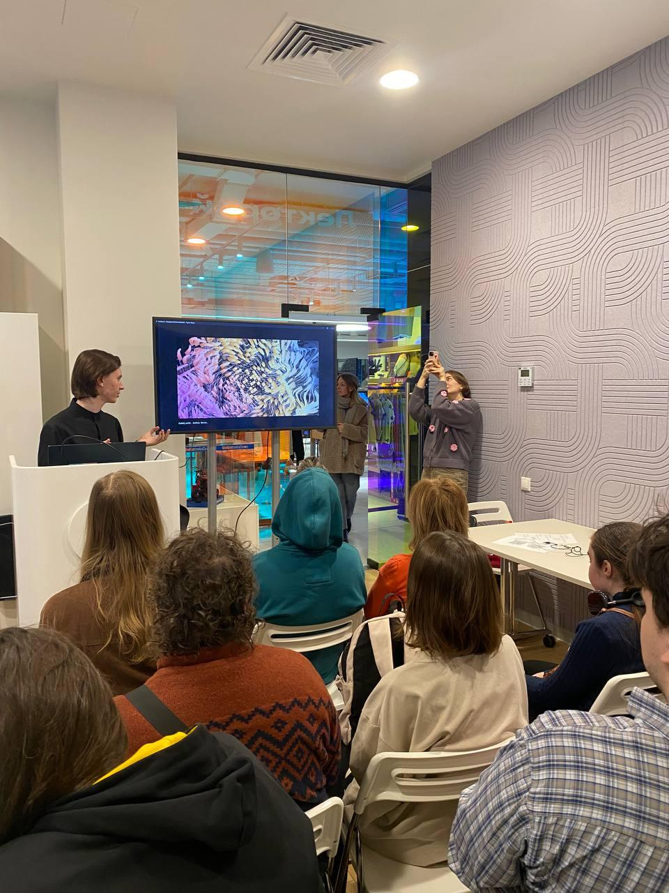
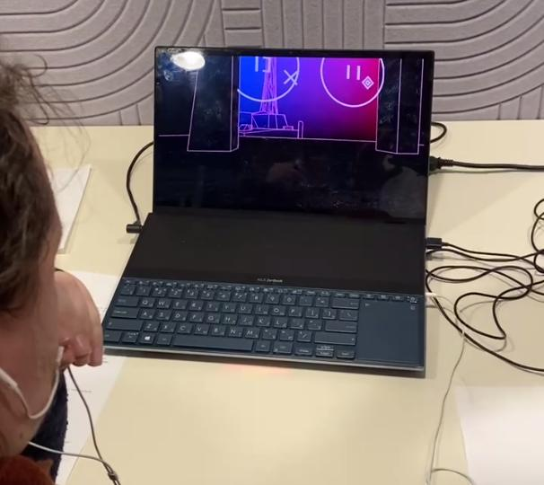
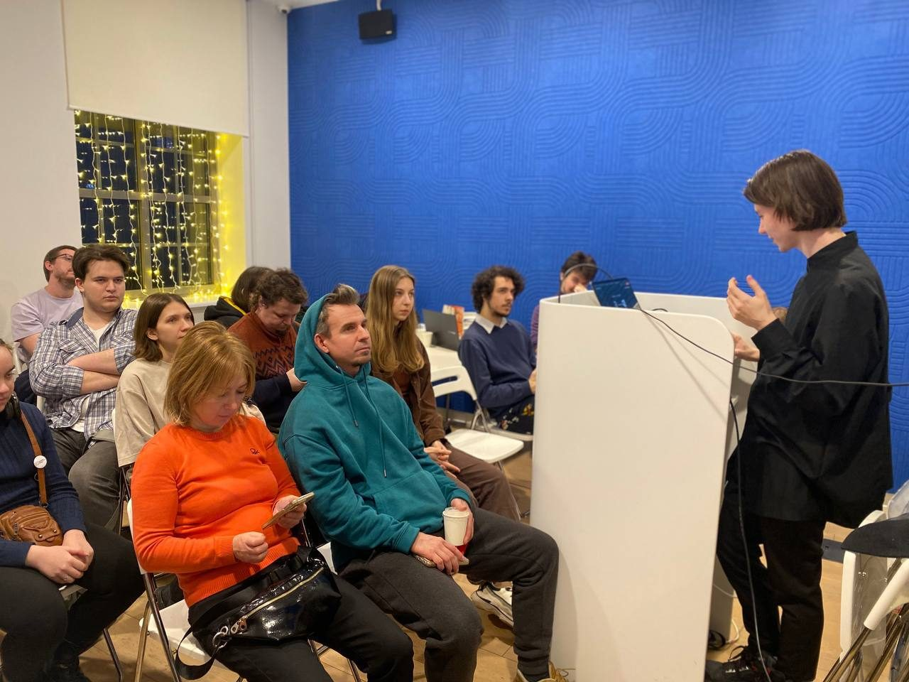
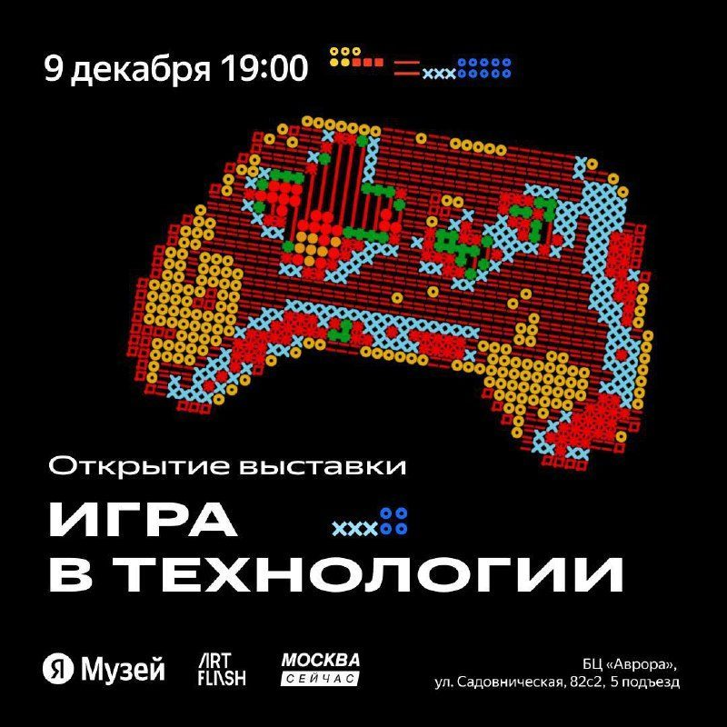
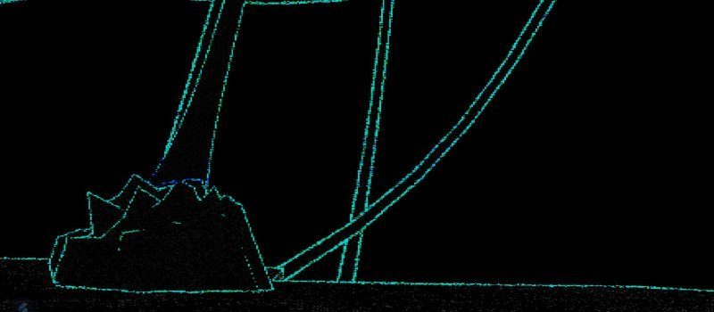
The lecture “Generative Art and Videogames” and the first playtest of The Ordinate.
Lecture
The lecture “Generative Art and Videogames” was dedicated to understanding the “hybridization” of these media
Game
The first playtest of The Ordinate — my new game with innovative controls
Pressure sensor and LED
3-4-3
In a stressful situation, it is always hard to regain composure and focus on your breathing.
So we made a device that helps you get your bearings at a critical moment
Always with you
Thanks to the wearable “3-4-3” device, breathing therapy can be with you at any moment! The device monitors your breathing rate and, if your breathing gets disrupted, shows a breathing timer right on your wrist
3-4-3
A pressure sensor detects disruptions in breathing rhythm and uses an LED to show the 3-4-3 rhythm. If the person matches it, the LED turns green
Cursor plugin and sensor
Holotropic
A Cursor plugin for auto-vibecoding.
Principle
By exhaling, you fill a progress bar. While it stays above 50%, the agent works.
Sensor placement
The sensor is attached to glasses and sits under the nose.
Breath
The plugin keeps you in holotropic breathing mode, whose effect is compared to taking hallucinogens.
DataART
Redhills Gallery — Tomorrow and the Day After Tomorrow
DirBonSai
Achieve Zen around your data
Your files
DirBonSai can analyze any folder on your computer. You can choose a work project, a folder of childhood photos, or a random program.
Cultivating beauty
App creates a tree based on your folder structure. You can trim its branches, thereby deleting the corresponding folders.
LiDAR
Ekaterina Cultural Foundation — The Great Disorder
MEM_FRGT
Record. Analyze. Delete.
LiDAR
You can only see the dots created by your scanner. You directly perceive the work performed by your visual cortex.
Memory
MEM_FRGT defamiliarizes memory, illustrating how we remember objects, how they become distorted in our memory, and how things out of our attention fade away.
Web-exhibition
Guide for Complete Dying
Online Exhibitions right for premiere
AR Interactive object
Shtubnits and St. Petersburg Media Art
Media-Archeology
Research
The goal of OpenCall was to create a route through landmark places for punks, artists, and philosophers of 1990s St. Petersburg. You can walk it on your own with the NewStageXR app, which also lets you view my AR objects, or wait for the Digital Rain festival at the end of September and walk it with an expert guide.
Objects
For the app, I made two installations:
- About Pirate Television: an abstract, punk version of Soviet television. Here you have to step into the role of a camera operator and shoot a report on a random and very strange topic.
- About Olga Tobreluts: a pioneer of digital collage and a diva of the “new academy.” In this installation, a digital mirage appears and disappears around you, trying to fit into the real world.
Lab
In 2025, 12 participants were selected for the lab from 44 applications. Curator: Selena Volkonskaya. The route is being added to the New Stage XR app. Route presentation: 25–26 September 2025.
Cell culture
Biovoodoo
Biovoodoo is a micro-human made of your tissue samples, ready to go through fire and water for your safety and curiosity!
Concept
We all sometimes want to do something dangerous:
- Jump from the 2nd floor, eat a bar of soap, pet a wild rat, enjoy a bath in shoe polish...
- Now you can test it!
- Biovoodoo is a micro-human made of your tissue samples, ready to go through fire and water for your safety and curiosity!
Micro Us
Our cells are a small representation of us. We feel strongly connected to them, yet we don't mind sacrificing them for our own good.
We created “living” people, only in a very small format. You can pity them, hate them, devalue them or love them. They are a mirror of how we treat the life inside ourselves.
- U251
- Brain cancer cells
- MRC-5
- Lung tissue fibroblasts
- L6
- Muscle fibroblasts
- PANC-1
- Pancreatic cancer cells
- HepG2
- Liver cells
- HEK-293
- Kidney cells
Blender, 3D printing and acrylic painting
Elite
“Elite” is a matryoshka rocket that asks children and adults the question: “Who should be sent into space?” — and teaches the basics of capitalist society.
Matryoshka
We decided to base it on the Soviet matryoshka rocket — a symbol of progress and dreams of a better future. And we modernized it for new realities, where it is important to teach the laws of capitalism and present two role models: the worker and the businessman — so that the child learns to choose their life path correctly.
Mismatch
But the problem is that the worker won't fit in the rocket because of his oversized hard hat. So in any case, the businessman will be the one to fly.
Helped organize + Lecture
GES-2, Prospekt — from 12 June 2026
Arcade Machines Exhibition TsFYV
Let's play
We breathed along in The Ordinate and discussed the influence of breathing on play and consciousness.
About breathing
Presented the following conclusions from The Ordinate playtests:
- Focusing on breathing displaces 80% of attention; signs smaller than the full screen go unnoticed
- Constant breath control creates a special state of consciousness
- This state increases engagement and tolerance for failure, but people stop looking for alternative solutions
Exhibition
The TsFYV arcade center at GES-2, on the Prospekt, runs from 12 June 2026. The machines with unusual controls were made by teenagers from the Zhuk studio of crazy arcades, together with professionals.
Circuit design and arcade machines
Y.Art Residency
We studied the art of arcade machines together with the Yandex team
Circuit design
We taught classes on the basics of circuit design and building your own controller for an arcade machine.
Games
Everyone came up with their own game with unusual controls — distance sensors, a dynamo, levers and buttons.
Breath-controlled game
The Ordinate
An experimental breath-controlled game, being developed as a tool for psychological therapy.
Awards
- First prize at the conference “IKAK? Games as Science”, Pushchino, 9–10 August 2025
- Special prize from the sponsor, the localization studio NikiStudio
Metaverse project
HSE METAVERS LABS
NOMAD
A cooperative metaverse project for a student work exhibition.
Metaverse
The game is built as a space for exhibiting other student works in the HSE metaverse. It seems completely empty until you come closer.
Cooperative
The metaverse lets several people explore this space at once. To get into some of NOMAD’s nooks, you’ll need a friend and a few ladders with bridges.
Zen game
UPADENOK
A zen game about controlling a fall, based on physics and planning.
Ecological Pong
PongU
An ecological version of Pong where trees grow and change the playing field.
Raspberry Pi / Videogame
Untitled Robot Controller
Control a strange robot on another planet with your hands and feet.
Controller
The controller is built with a Raspberry Pi, 4 encoders, and 4 spools of cord for attaching name badges.
Controls
Each thread on the spool is attached to a part of the body. The player has to control a hopping robot on an uninhabited planet. The controller defamiliarizes the controls, creating the feeling of moving a body that doesn’t feel like your own.
Perception game
Razvidet
A game exploring auditory and visual perception under noise.
Game · Mini Jam 136
Homegeon
An adventure about an unlucky homeless mage who ends up in an ancient dungeon: every spell can be cast only once.
Survival horror · in development
Jarnvid
A dark survival game about a dead boy in a magical forest: travel through the darkness, defeat a beast and grow up.
First-person puzzle
Me and My Cubes
A first-person puzzle: pick up a cube and manipulate time.
Action · Unreal Engine
SpaceJunker
You are a Space Junker: hop on your space rattletrap and do some missions.
First-person platformer
ULTRASPEEED
An FPS platformer where speed is your resource. Accelerate as much as you can.
Minimalist platformer
GRAV
A minimalist platformer where the only way to interact with the game world is to change the direction of gravity.
Rave game
Rovesnik club — ArtTECH NUST MISIS open defense, 13.11.2025
Dance of Eternity
A rave game about dance, evolution and connection with the eternal.